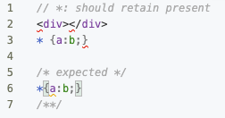
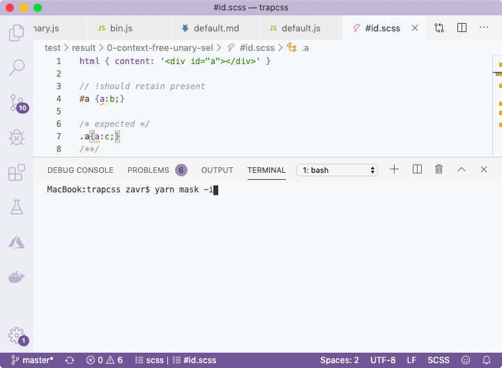

##! Creating Tests
Tests for the original packages were written for _Mocha_ testing framework, but we need to update them into _Zoroaster_ context-testing specs and masks. Let's take [the first test suite](https://github.com/leeoniya/dropcss/blob/2a883e5107c68c2181d4c0e02b30e15cf4e7736c/test/src/0-context-free-unary-sel.js) and have a look at its structure:
We can see that each time the logic is pretty much the same: we use the `` html as HTML string for first cases, but change it to `` for ID selector tests, then manipulate some CSS from test to test and expect the result to be equal to certain values. Tests like that are perfect candidates for mask testing — a new type of tests where using a template called test mask we generate many specs at runtime based on multiple input-to-output mappings that come from a separate file called mask result.
So what are we controlling? Basically, it's HTML and CSS, and we assert on the output. This means we need 2 input properties, and one output. Masks by default look like the following:
```markdown
[Optional preamble to the whole mask]
## test name
input
/* expected */
output
/**/
## test name2
input
/* property */
optional additional prop with
some controlled value
/**/
/* expected */
output 2
/**/
```
This means we give spec names, can add any number of properties, and pass the expected output for comparison also. The testing framework will then execute the test logic that is written only once, and using string assertion (or deep equal for objects), compare the output to expected. In case of an error, it will be shown in the console and the framework will exit with the status code > 0.
In this case, we can construct the following mask. It's a bit complex for the first ever example of a mask, but bear with me, it's not that complicated.
To create a mask, we import the *makeTestSuite* method from ``@zoroaster/mask`` that comes together with _Zoroaster_. The first argument to this function is a path to the mask result file, or directory with multiple such files, that will be scanned recursively. The second argument is the actual config to the mask, and will include either methods like `getResults` (most general use case), `getReadable`, `getTransform` (if our library returned streams) or `fork` configuration (to test Node processes). All properties from the mask are available via the `this` keyword: *this.preamble*, *this.input*. We'll organise tests by files, so that a preamble in each file can be used as HTML input, whereas the body of each test will be the CSS string. When we don't write preamble, we'll split the test input by new line to derive HTML and CSS.
We want to extract HTML using the regex: `[,html] = /content: '(.+?)'/.exec(html)`, to be able to receive syntax highlighting in mask results, which will be saved as `.scss` files. After HTML and CSS strings are ready, we simply pass them to ``trapcss`` and return results. Our function is synchronous, but it would also be possible to test async methods by writing `async getResults(){}`. Using the mapping function `mapActual` we then return the css property of the whole result, so that it can be compared against the expected one from the mask result. If we wanted to assert on other properties from the result too using JavaScript, we could implement another method called `assertResults` but we're only interested in testing produced CSS here. This is how our mask results look like:
This is the default mask result for the very first test, without a preamble, but with HTML followed by new line and CSS in the test body. The reason to write html in CSS is to keep syntax highlighting in the whole file, for example if we only gave HTML as a string, we'd get red lines everywhere in the file, as shown below.

Each new tests starts with the comment `//` characters — a default unless a markdown file is used, in which case it'd be `##`. This can also be controlled via the `splitRe` setting of the mask config.
This is the mask result for test suite with the tag testing, where HTML is given at the top of the file (called preamble) to be accessed by each test. We can also duplicate this file and change the div tag to self-closing tag in a single place (preamble), to increase test coverage easily. Where the output of the test is expected to be a 0-length string, we just leave the expected property empty.
These are tests for the ID selector, where we used preamble as HTML input for all tests. We write such html as the `content` property of the CSS rule, so that the IDE will provide syntax highlighting for the best pleasant developer experience while testing. There are more tests for attribute selectors which you can [study in the repository](https://github.com/kumarikandam/trapcss/tree/master/test/result/0-context-free-unary-sel/attr) but they all follow the same logic so we skip talking about them here.
To run our tests, there are a number of *package.json* scripts that can be used: [spec|mask|test] depending on whether we want to run specs (see later section), masks or all. We'll just run after having constructed our first mask tests.
```bash
yarn run v1.13.0
$ yarn t test/mask
$ zoroaster -a test/mask
test/mask
bin
unary
Context-free, unary selector
�✓ *: should retain present
#id
�✓ should retain present
�✓ should drop absent
�✓ :not - should retain present
�✓ :not - should drop absent
.class
�✓ should retain present
�✓ should drop absent
�✓ :not - should retain present
�✓ :not - should drop absent
�✓ should retain present
�✓ should drop absent
�✓ :not - should retain present
�✓ :not - should drop absent
�✓ should retain present
�✓ should drop absent
�✓ :not - should retain present
�✓ :not - should drop absent
attr
�✓ [attr]: should retain present
�✓ [attr]: should drop absent
�✓ [attr=value]: should retain present
�✓ [attr=value]: should drop absent
�✓ [attr*=value]: should retain present
�✓ [attr*=value]: should drop absent
�✓ [attr^=value]: should retain present
�✓ [attr^=value]: should drop absent
�✓ [attr$=value]: should retain present
�✓ [attr$=value]: should drop absent
�✓ [attr~=value]: should retain present
�✓ [attr~=value]: should retain present (multiple first)
�✓ [attr~=value]: should retain present (multiple second)
�✓ [attr~=value]: should drop absent
�✓ [attr~=value]: should drop absent (reverse)
:not
�✓ [attr]: should retain present
�✓ [attr]: should drop absent
�✓ [attr=value]: should retain present
�✓ [attr=value]: should drop absent
�✓ [attr*=value]: should retain present
�✓ [attr*=value]: should drop absent
�✓ [attr^=value]: should retain present
�✓ [attr^=value]: should drop absent
�✓ [attr$=value]: should retain present
�✓ [attr$=value]: should drop absent
🦅 Executed 42 tests.
Done in 1.85s.
```
### Focus In Masks
To focus on a particular test, we can prepend its name with `!` in the mask result like so:
```scss
// !should retain present
#a {a:b;}
/* expected */
#a{a:b;}
/**/
```
It's also possible to focus on entire masks, by adding `!` to the path of a mask result, or exporting the mask with `$` name:
```js
// use ! in mask result path
const contextFreeUnarySel = makeTestSuite(
'!test/result/0-context-free-unary-sel', {
getResults() {},
// ...
})
// named export with $
export const $contextFreeUnarySel = makeTestSuite(
'test/result/0-context-free-unary-sel', {
getResults() {},
// ...
})
// export with $ in object
export default {
'$Context-free, unary selector': contextFreeUnarySel,
}
```
In _Zoroaster_, test suites are nested objects. For better reporting, we exported the default test suite as an object with the `Context-free, unary selector` property that contains the test suite generated by the mask. But we could also simply export a variable using a named export, it's just that we won't be able to report the test suite name as a sentence with whitespace and commas.
### Interactive Mode
If the test was failing, _Zoroaster_ would use string comparison algorithm to present where the error was in color. Let's imagine we entered our expected value incorrectly:
```scss
// !should retain present
#a {a:b;}
/* expected */
.a{a:c;}
/**/
```
The error will be shown using color highlighting in the CLI. Moreover, it's possible to run _Zoroaster_ in *interactive* mode with the `-i` flag that will tell the testing framework that we want to interact with it to update mask results in place if errors were found, as demonstrated below.

The default option is to update, but more info can be shown if `d` is pressed, or no updates are made if anything else is passed, in which case the test suite will fail. This is a useful method for quickly drafting the inputs with empty outputs, running interactive mode on them, and populating mask files with expected outputs.
### More Masks
Let's add some more mask testing.
```js
// test/mask/default.js
import makeTestSuite from '@zoroaster/mask'
import trapcss from '../../src'
const T = makeTestSuite([
'test/result/@keyframes.scss',
'test/result/@font-face.scss'], {
getResults() {
const css = this.preamble
const prepend = this.input
const { css: out } = trapcss({
html: '',
css: prepend + css,
})
return out.replace(prepend, '')
},
})
```
The *makeTestSuite* method accepts an array of paths in addition to paths to files and paths to directories. When passing an array, an object will be created where basenames of files from the array are test suite names within the exported object. Above, we just created a `T` variable, which will be exported as *default* later. When a test suite has the name "default", its properties are merged up with its parent test suite, so that `default` test suites' names are never shown during reporting.
The tests for keyframes and font faces have some page-wide CSS with `@keyframes` rules that is placed in the preamble. The test input is a CSS rule that would reference this `@keyframes` declaration, so we don't want our library to drop those rules. Therefore, we take the test input and append it to those declarations which are then fed to our ``trapcss`` method. But when returning the result, we want to replace the global rules with an empty string so we don't clutter the expected output with repeated information.
```scss
div{color: red;}
@keyframes pulse{0%{width:300%;}100%{width:100%;}}
@-webkit-keyframes pulse{0%{width:300%;}100%{width:100%;}}
@keyframes nudge{0%{width:300%;}100%{width:100%;}}
@-webkit-keyframes nudge{0%{width:300%;}100%{width:100%;}}
@keyframes bop{0%{width:300%;}100%{width:100%;}}
@-webkit-keyframes bop{0%{width:300%;}100%{width: 100%;}}
span{color: black;}
// drops all
/* expected */
div{color: red;}
/**/
// drops pulse, nudge
div{animation-name: bop;}
/* expected */
div{color: red;}@keyframes bop{0%{width:300%;}100%{width:100%;}}@-webkit-keyframes bop{0%{width:300%;}100%{width: 100%;}}
/**/
```
We can skip adding inputs, if we want to feed the test case an empty string. This is illustrated with the _drops all_ test case. The output CSS would actually contain the whole of the preamble, but we cleared it (`.replace(prepend, '')`) in the mask so that we can focus our attention on variable results. The font face mask results follow the same logic as keyframes. But we also have a special case for font faces:
```js
const fontfaceCustomProps = makeTestSuite(
'test/result/fontface-custom-props.scss', {
getResults() {
const prepend = this.preamble
const css = this.input
const { css: out } = trapcss({
html: '',
css: this.doPrepend === false ? css : (prepend + css),
})
return out.replace(css, '')
},
jsProps: ['doPrepend'],
})
T['@font-face (custom props)'] = fontfaceCustomProps
export default T
```
Custom properties means that font faces can be declared with variables. Our root CSS is still taken from preamble, but we add a new property called *doPrepend* that controls whether it should actually be added to the CSS from input. It allows to put tests in the same file, but tinker the test logic slightly from test cases themselves (by using properties). Properties could also be written as JSON or JS, in which case we'd need to pass another config item called `js[on]Props: ['doPrepend']` that would make the testing framework parse those properties into a JS object. By default, we do prepend the preamble to input CSS, and only when the *doPrepend* property is explicitly set to `false`, we don't do it.
Because all the test suites generated in this file should be on the same level, but the name of the custom-props test suite had to be written in English with spaces (hence it couldn't be exported as simple variable), we assigned a property to the default object `T` which is then exported.
```scss
div{color: red;}:root {--font-family: Foo, 'Bar Baz';}
@font-face {font-family: Foo}
// 1) drops if unused --font-family: should not be confused with font use
div{font-family: 'Open Sans', Fallback, sans-serif;}
/* expected */
div{color: red;}div{font-family: 'Open Sans', Fallback, sans-serif;}
/**/
// 2) retains if used in font-family
div{font-family: var(--font-family);}
/* expected */
div{color: red;}:root{--font-family: Foo, 'Bar Baz';}@font-face{font-family: Foo}div{font-family: var(--font-family);}
/**/
// 3) retains if used - deep resolve
:root {--font: var(--sty) var(--wgt) 1em/var(--lht) var(--fam1), var(--fam2); --sty: italic; --wgt: bold; --lht: var(--hgt)em; --fam1: 'Open Sans'; --fam2: Arial; --hgt: 1.6;}
@font-face {font-family: var(--fam1);}
div {font: var(--font);}
/* doPrepend */
false
/**/
/* expected */
:root{--font: var(--sty) var(--wgt) 1em/var(--lht) var(--fam1), var(--fam2); --sty: italic; --wgt: bold; --lht: var(--hgt)em; --fam1: 'Open Sans'; --fam2: Arial; --hgt: 1.6;}@font-face{font-family: var(--fam1);}div{font: var(--font);}
/**/
```
In the first test, we checked that if a font-face declared as a variable wasn't used, it's declaration and block with declaration of its variable that became empty were dropped. In the second test we verified that the variable block as well as the rule block that uses this variable are kept. Finally, the third test made sure that when the font property references a variable which in turn references another variable, the CSS is retained.
The next test suite is pretty simply, but reads HTML from its own property rather than from the preamble as it will be changed from test to test.
```js
export const customProps = makeTestSuite(
'test/result/custom-props.scss', {
getResults() {
const [,html] = /content: '(.+?)'/.exec(this.html)
const { css } = trapcss({
html,
css: this.input,
})
return css
},
})
```
There's actually only one test in this test suite, but the point is that instead of repeating JS logic time and time again, we can simply be adding new test cases by specifying their inputs and outputs. It saves a lot of time and makes us very agile during development — if a bug needs to be fixed, or a feature added, we can go to the mask result, add the input, keep the output empty, generate current output using interactive mode, adjust it to how it should be, run tests, see them fail, then adjust source code to achieve desired behaviour.
```scss
// does not confuse BEM -- classes with custom props
:root{--red: #f00;}.a--b:hover{color: var(--red);}.--c{width: 10px;}
/* html */
html { content: '' }
/**/
/* expected */
:root{--red: #f00;}.a--b:hover{color: var(--red);}.--c{width: 10px;}
/**/
```
The final test is for our new functionality that allows to preserve *alternate* comments. We could also write it as a spec, but masks are just as suitable for this task.
```js
export const alternate = makeTestSuite(
'test/result/alternate.scss', {
getResults() {
const { css } = trapcss({
html: '',
css: this.input,
keepAlternate: true,
})
return css
},
})
```
Original _DropCSS_ also doesn't produce pretty output, which is another reason why I wanted to run it through _Stylesheets_ after its pass. If we were to place output in specs, we'd have to define a string with multiple lines and complex formatting, and assert using string equality, which wouldn't show where strings were different, like masks do with red/green color diffs.
```scss
// keeps the alternate comment
div {
text-decoration: underline;
/* @alternate */
text-decoration: underline dotted;
}
/* expected */
div{text-decoration: underline;
/* @alternate */
text-decoration: underline dotted;}
/**/
```
Please note that if there was a run-time error in algorithms, the report will only show the location in the mask result where the test failed. Imagine that we made an mistake when creating the mask, by referencing the `.css` mask result property instead of `.input`, which evaluated to undefined, but our source code expected a string:
```scss
export const alternate = makeTestSuite(
'test/result/alternate.scss', {
getResults() {
const { css } = trapcss({
html: '',
css: this.css,
keepAlternate: true,
})
return css
},
})
```
We'd get the following error in the CLI:
```bash
$ zoroaster -a test/mask
test/mask
alternate
✗ !keeps the alternate comment
| Error: Cannot read property 'replace' of undefined
| at !keeps the alternate comment (test/result/alternate.scss:13:1)
```
The error start has been updated to point to the location of the test in the mask result, for convenience of navigation, but it's not the problem with inputs/outputs, but test logic. To fix this, we need to set `DEBUG=1` env variable when running tests:
```bash
bash-3.2$ DEBUG=1 yarn mask
yarn run v1.13.0
$ yarn t test/mask
$ zoroaster -a test/mask
test/mask
alternate
TypeError: Cannot read property 'replace' of undefined
at parse (/Users/zavr/adc/trapcss/src/css.js:178:13)
at dropcss (/Users/zavr/adc/trapcss/src/index.js:40:16)
at Object.getResults (/Users/zavr/adc/trapcss/test/mask/default.js:53:23)
at /Users/zavr/adc/trapcss/node_modules/@zoroaster/mask/compile/depack.js:688:27
at t.(anonymous function) (/Users/zavr/adc/trapcss/node_modules/@zoroaster/mask/compile/depack.js:789:15)
at bb (/Users/zavr/adc/trapcss/node_modules/zoroaster/depack/bin/zoroaster.js:409:66)
at
✗ !keeps the alternate comment
| Error: Cannot read property 'replace' of undefined
| at !keeps the alternate comment (test/result/alternate.scss:13:1)
```
Now we're given the full stack. As a rule of thumb, whenever you encounter an error that you don't understand in _NodeTools_, try rerunning the program with `DEBUG=1` env variable — our convention is to display full error stacks when the `DEBUG` is set. This can help fix unknown errors.
Overall, when executing new tests, we get the following report:
```bash
$ zoroaster -a test/mask/default.js
test/mask/default.js
@keyframes
✓ drops all
✓ drops pulse, nudge
✓ drops bop
✓ retains nudge
@font-face
✓ retains if used
✓ retains if used (shorthand)
✓ drop if unused
✓ drops if unused (multiple defs)
@font-face (custom props)
✓ drops if unused --font-family: should not be confused with font use
✓ retains if used in font-family
✓ retains if used - deep resolve
✓ drop if unused - deep resolve
customProps
✓ does not confuse BEM -- classes with custom props
alternate
div{text-decoration: underline;⏎
/* @alternate */⏎
text-decoration: underline dotted;}
✗ keeps the alternate comment
| Error: 'div{text-decoration: underline;text-decoration: underline dotted;}' == 'div{text-decoration: underline;\n /* @alternate */\n text-decoration: underline dotted;}'
| at keeps the alternate comment (test/result/alternate.scss:1:1)
test/mask/default.js > alternate > keeps the alternate comment
Error: 'div{text-decoration: underline;text-decoration: underline dotted;}' == 'div{text-decoration: underline;\n /* @alternate */\n text-decoration: underline dotted;}'
at keeps the alternate comment (test/result/alternate.scss:1:1)
🦅 Executed 14 tests: 1 error.
```
The last error is due to the fact that the new functionality has not been implemented. But it's OK since it's in spirit of test-driven development: we added a test first, before the source code. With mask testing, the TDD methodology is easily embraced as test cases are very easy to add by simply providing new data. Instead of wasting our time on setting up test routines in JS, we can try to come up with as many use cases via masks.